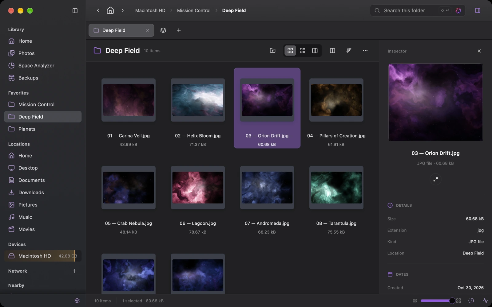
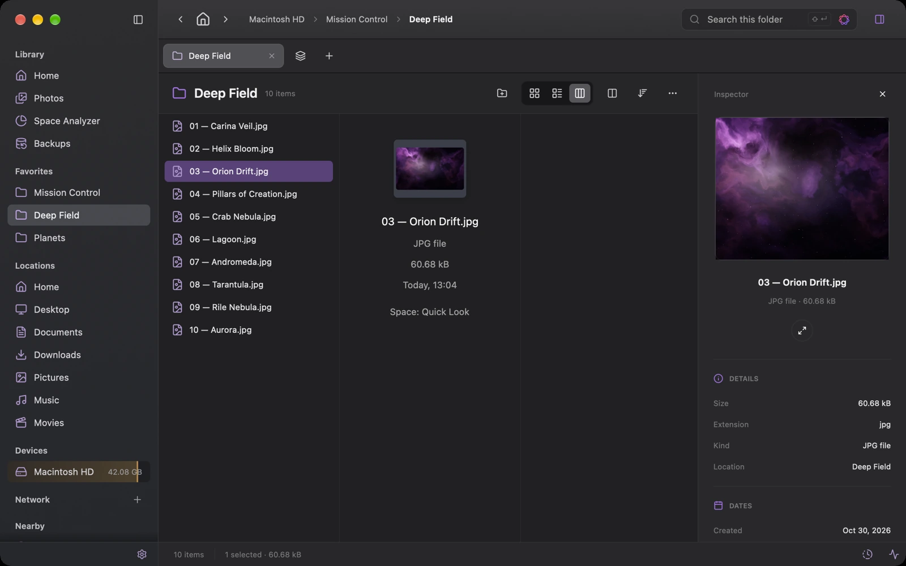
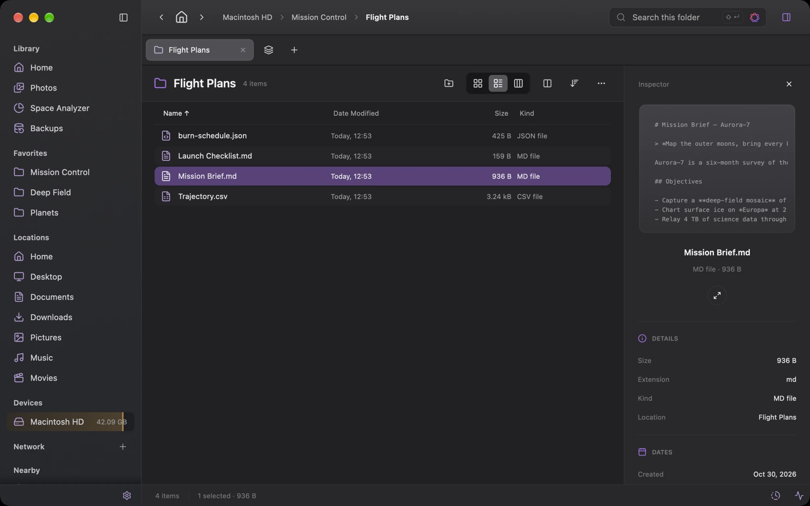
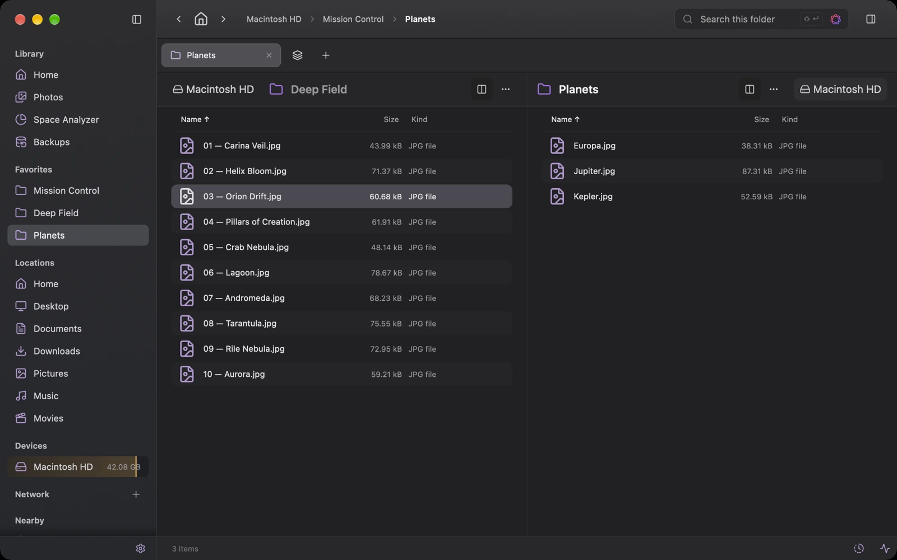
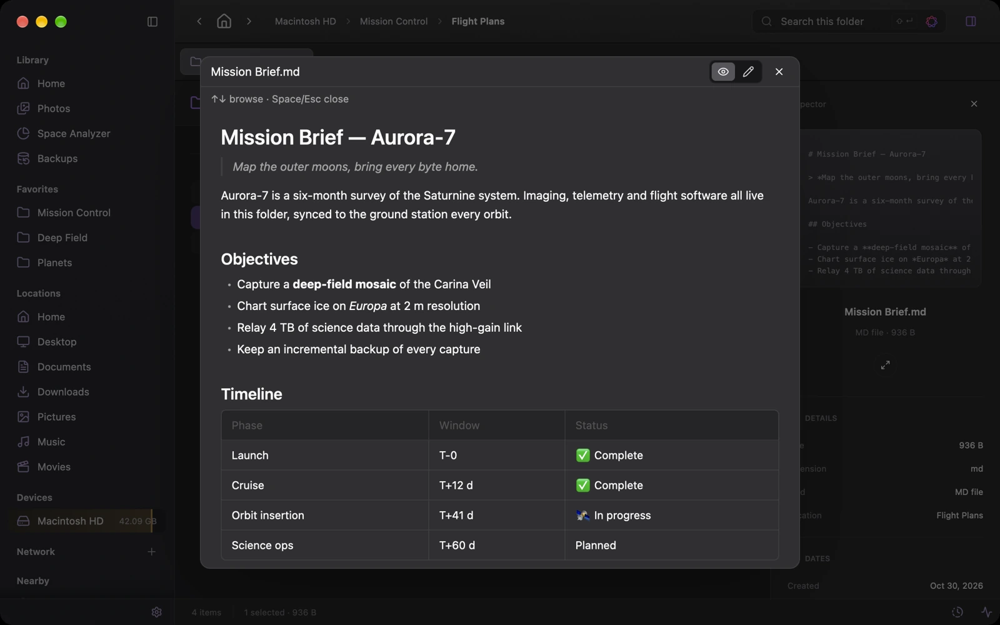
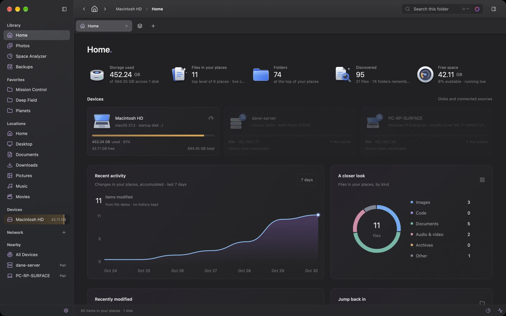
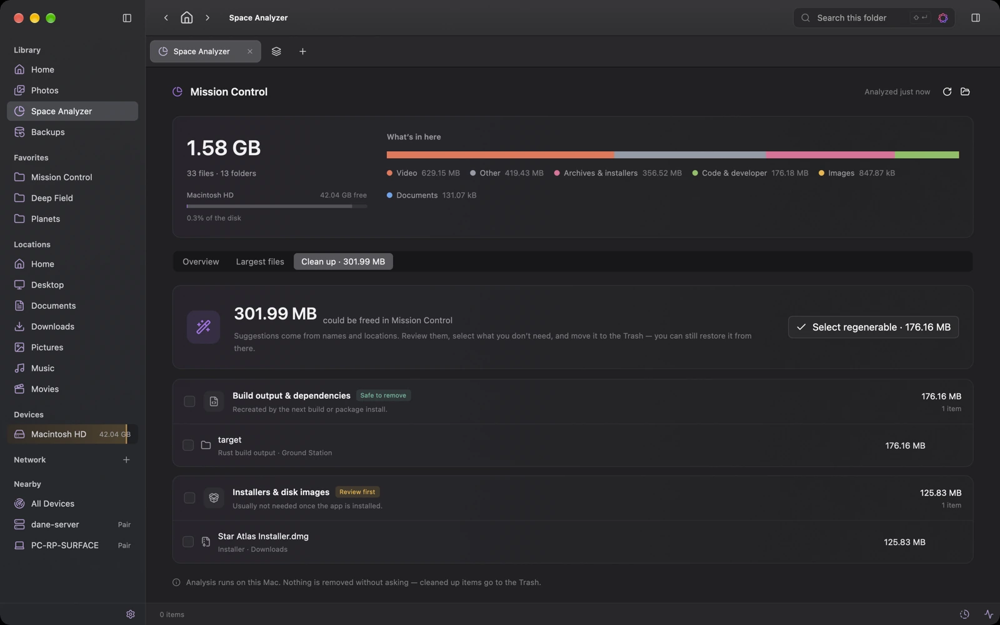
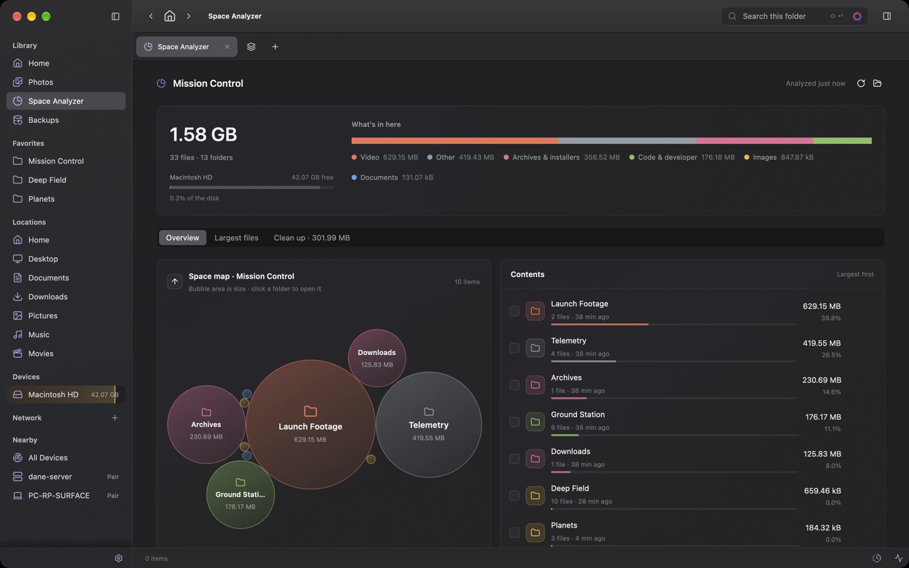
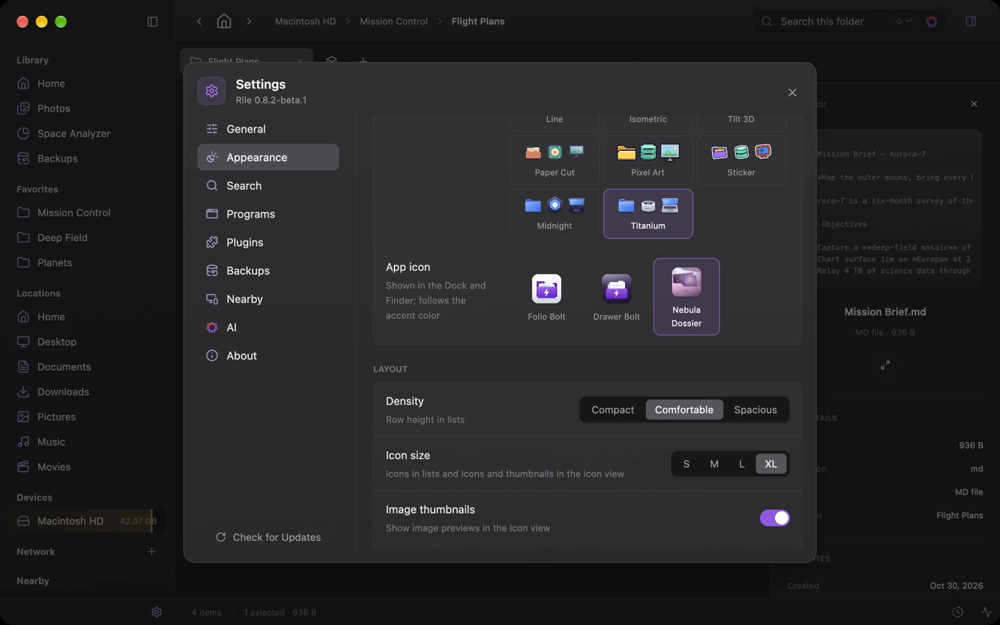

Three ways to look
Switch between list, thumbnail grid and Miller columns with ⌘1 ⌘2 ⌘3. Open folders in tabs or put two of them side by side.
Rile is a native file explorer written in Rust and drawn on the GPU. Tabs, dual panes, remote servers, nearby devices, backups and on-device intelligence — together in one calm, fast window.

01 Mission modules
Switch between list, thumbnail grid and Miller columns with ⌘1 ⌘2 ⌘3. Open folders in tabs or put two of them side by side.
Name, glob, regex, content, size, date and type — recursively, with .gitignore support and an optional Spotlight backend.
One parallel scan, then explore it as a bubble map. Review cleanup suggestions before anything moves to the Trash.
FTP, FTPS, SFTP, SMB 2/3, Google Drive and OneDrive. Nearby servers appear via Bonjour; credentials live in the Keychain.
Mirror your work to a drive, a saved server or a paired device, keeping earlier versions. Run them by hand, on a schedule or after changes — and restore from the Backups page.
Press Space for PDFs, images, Markdown and syntax-highlighted code. Edit text right in the preview.
Extend context menus and previews with WebAssembly plugins that run in a sandbox.
Compress and extract ZIP, 7z, tar and friends, with the compression level you choose.
02 Guided tour
Real captures of the native macOS app, browsing demonstration files. Click any image for a closer look.





03 Space Analyzer
Rile measures a folder once, then lets you drill into it as a bubble map, list its largest files and review what can safely go.
node_modules, target, DerivedDataNothing is removed until you review it, and everything goes to the Trash.


04 Nearby Devices
Other computers running Rile on your network show up on their own. Pair once with a six-digit code, browse what they share and send files back and forth — directly, over the local network.
# A headless Nearby device for your Linux box, as a systemd service.
$ curl -fsSL https://raw.githubusercontent.com/RickyDane/rile/master/packaging/linux/install.sh | sudo sh
✓ rile-server installed · run rilectl pair to add a device
05 On-device intelligence
Search by meaning, summarize folders and describe images with models that run on your own machine — Apple Foundation Models on supported Macs, or local llama.cpp and MLX models.
Where did I save the Europa ice charts?
Illustrative conversationsearch_files"europa ice"3 resultslist_folderMission Control/Planets5 itemsread_fileMission Brief.mddoneThe chart is Europa.jpg in Mission Control › Planets. The Mission Brief lists it under “Chart surface ice on Europa at 2 m resolution”.
06 Keyboard first
Every action has a shortcut, and ⌘/ shows them all. Try a few right here — the keys light up as you press them.
07 Make it yours
Light or dark, eight accents, three densities, four icon styles and three app icon designs. Go on — this page follows along.

T–0 Ready for launch
Free and open source. Latest release v0.8.1.
Apple Silicon and Intel. On-device AI on Apple Silicon with macOS 26 or later.
Windows 10 and 11. Installs per user, no administrator rights needed.
A headless Nearby device for Linux servers, x86_64 and aarch64.
Prefer to build it yourself? cargo run -p rile-app — see the README.